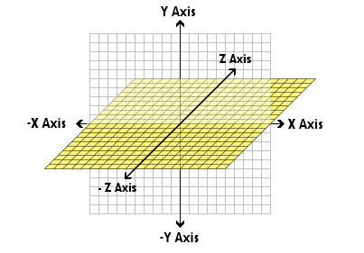

|
Back in Step 6 we learnt about moving the camera using Vectors which are really just X, Y, Z co-ordinates, X = left and right, Y = up and down and Z = forwards and backwards. |
||
|  | ||
| So to move our Green Pole to the left we need to set a -X value - as we know our floor is 400 wide (the size we set when we made it), we know that our green pole needs to be at -200, so click on it and set its Position X to -100. it also looked like its too low down too, so we need to raise it up, set the Y to 20, that will bring it up so that it sits on the floor instead of being halfway through it. | ||
 |
||
| so now we have it in the right place how do we go about rotating it, now you might be thinking that you can see a Rotation X value, so you could just set it to 1 and away it goes, well your right in the fact that will rotate it - however it will only do it once at the start of the Frame, what we need to do is setup something that Always rotates it by 1. So go back to the event viewer. Double click on New Condition Choose the Special icon which looks like a cog, and select Always. Now its time to set its rotation every Frame, like we did before Right Mouse the box under the Left Pole and level with Always and choose Node Properties -> Rotation -> Set Z Angle. | ||
|
In the expression window we need to tell it what angle we want to rotate as a number, so if we were to write +1 the Red light will stay on as +1 isnt a real number but what we can do is say whatever the rotation is now + 1, so how do we do that ? remember how we picked a material out of the material cache by right mousing its icon. we can do the same every object only instead of a material we can pick a number, in our case the left poles current Z angle. so right mouse the Left Pole select Node Properties -> Rotation -> Get Z Angle. |
||
| Now that we have its current angle we need to choose either to rotate left -1 or right +1, we could of course choose +2 +30 or whatever we choose but the rotating will be smoother if we choose +1, Type +1 after ZRotation( "Left Pole" ) | ||
| CHALLENGE TIME : using what you learned in the last few steps add a new static mesh call it Right Pole, make the tube pink and move it to +200 X and +20 Y dont forget to make it rotate. Hint : Re-read step 10 - remember you already loaded the pink material into slot 3 of the material cache. | ||
| Once yours matches mine you can proceed to step 12. GOOD LUCK | ||